イベント情報
（終了しました）【高岡市京田】"かわいい"を詰め込んだナチュラル＆キュートなお家見学会
詳しいご案内
日程・価格・募集内容などは、掲載当時の情報です。
4月23日（土）・24日（日）に、高岡市京田で完成見学会を行います。
お施主様こだわりの"かわいい"を詰め込んだ 、ナチュラル＆キュートなお家を、ご厚意により２日間限定で公開いたします。
完成したばかりのスッキリとした新築住宅の中だから、イメージの広がり方は自由自在。
「しっくい塗り」の壁だから "アンティーク調の照明" や、"アールの壁" がぴったりと馴染みます。
体感して初めてわかる「自然素材」が生み出す空気の中で、湧き出るアイディア と一緒に想像を膨らませてみてください。
こんな方におすすめです
・家づくりのイメージをより明確にしたい方
・しっくいの壁など、塗り壁に興味のある方
・かわいい家を建てる土地探しに迷っている方
・将来必要になる家の修繕費を最小限に抑えたい方
・お金の不安を解消してから進めたい方
--
私たちフジ創は、３５年間探求を重ねてきた豊富な経験と実績があるからこそ、お客様の立場でお悩みやご不安を理解して、解決に向けたご提案が可能です。
適正な価格で建てた後に長年住み続けることのできる「本物の家」を、今回の見学会で体感していただき、その違いをお確かめください。
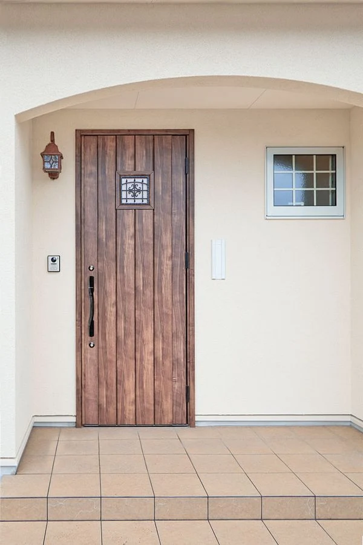
お家に着いた瞬間に思わず「にっこり」してしまう、可愛いくて上品な玄関ポーチ。
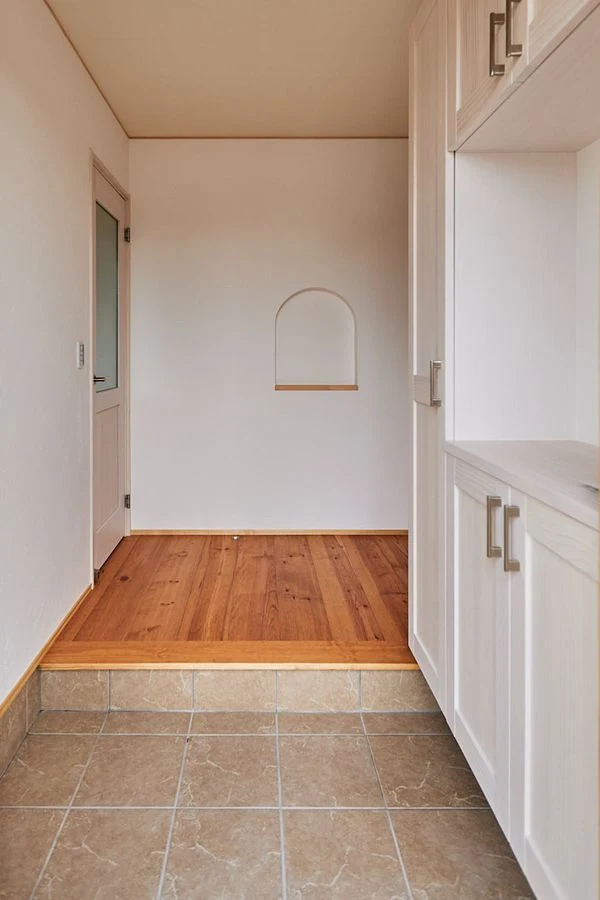
玄関ドアを開けると早速ニッチの壁が目に飛び込んできます。
季節に合わせた、お気に入りの雑貨の飾りつけが楽しみになりますね♪
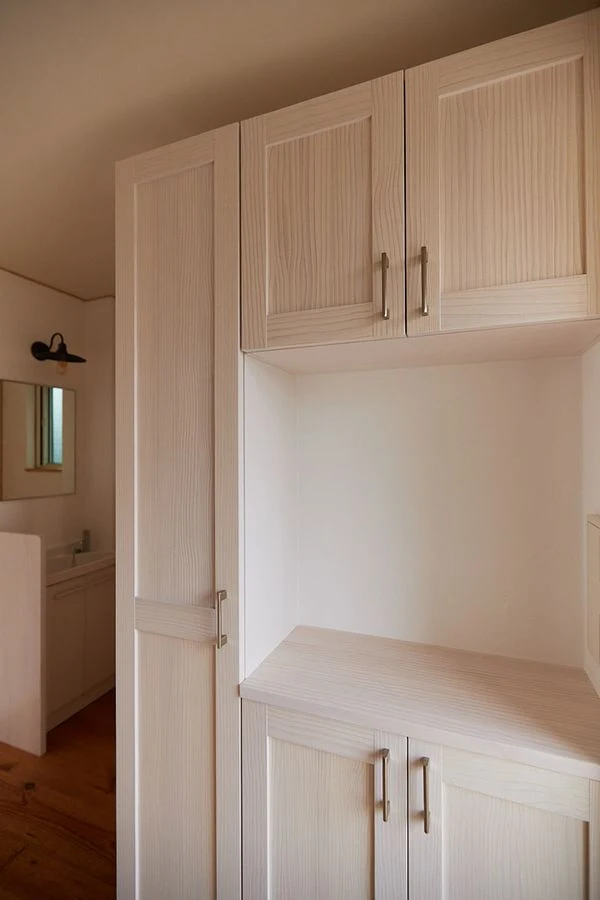
白い漆喰の壁と同じ、真っ白な玄関収納で玄関はスッキリ。
奥にはアンティーク調ランプが付いた手洗い洗面台。
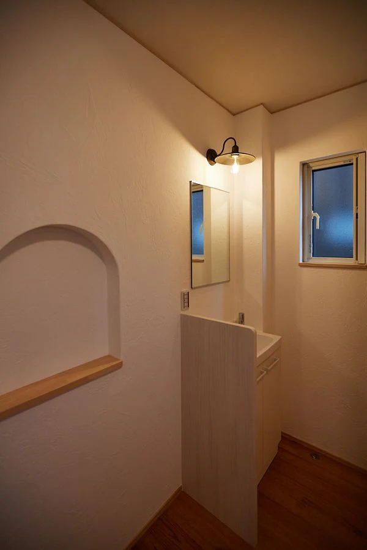
ランプが灯ると、しっとりとした雰囲気に様変わり。
壁はすべて「漆喰塗り」だから明かりの広がりが柔らかです。
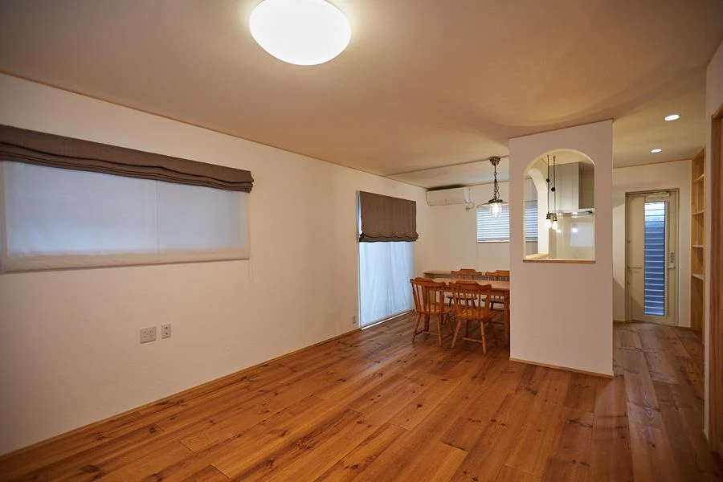
広々としたリビングルーム。
奥には、アールの壁に囲まれた＼かわいさ満点／のキッチン＆ダイニング。
白い「漆喰の壁」と「無垢材のフローリング」、「コットンクロスの天井」が、見た目だけでなく "居心地の良い爽やかな空気" も生み出します。
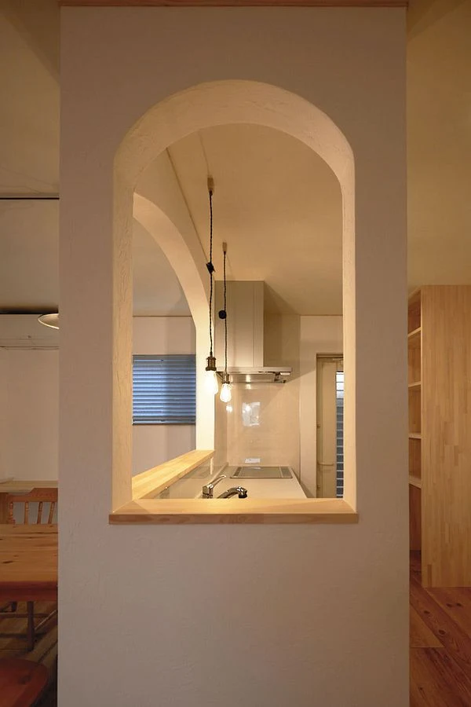
アールの壁越しに灯るキッチンランプの雰囲気がとても素敵です。
こちらのアールも全面丁寧な「漆喰塗り」仕上げ。しっとりと落ち着いた高級感が印象的です。
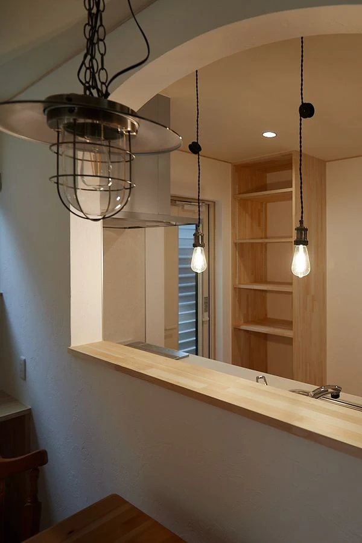
こちらは、キッチン正面側から見た様子。
手前に写るのはダイニングライト。
こちらもアンティーク調で、とてもお洒落な北欧風ペンダントライトです。
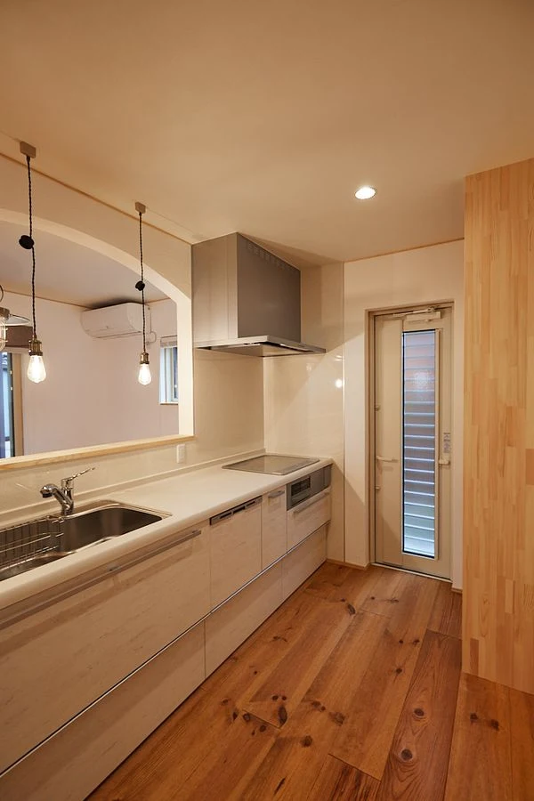
立っているだけでワクワクして、料理が楽しくてたまらなくなるキッチンです。
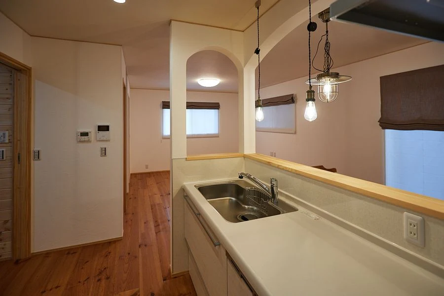
キッチンから、リビングとダイニング全体が見渡せて、家族の様子がよ～くわかります。
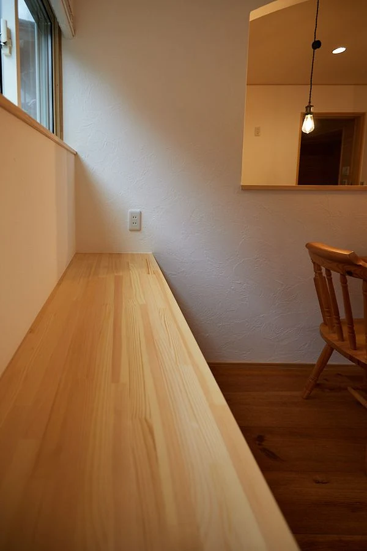
リビングの窓際には大きなカウンターテーブル。日中は窓からの採光で十分な明るさです。
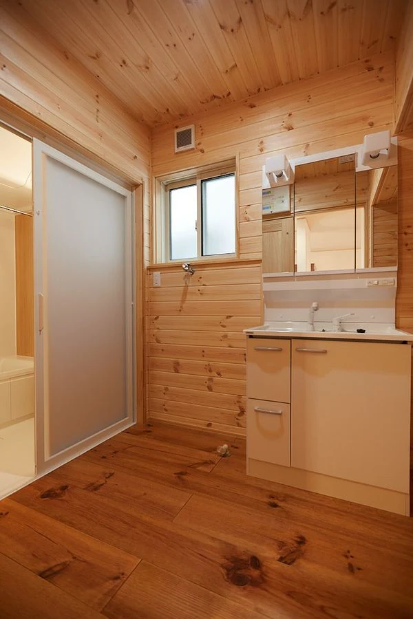
こちらは、木材仕上げの洗面＆脱衣室。
壁・天井とも吸湿性に優れた「杉材」を使用。
お風呂の湿気も残りにくいのがポイントで、冬は入浴前の寒さを和らげて暖かく、
夏は湯上りの爽快感を引き立てる快適な環境を保ってくれます。
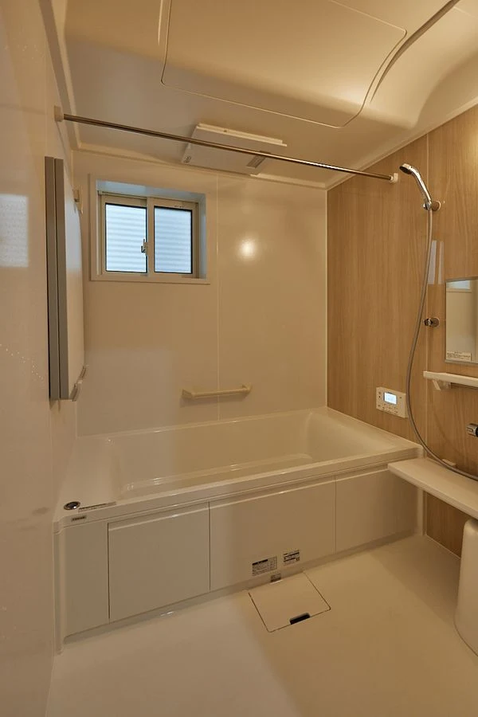
お風呂時間が楽しみになる、広いバスルーム。
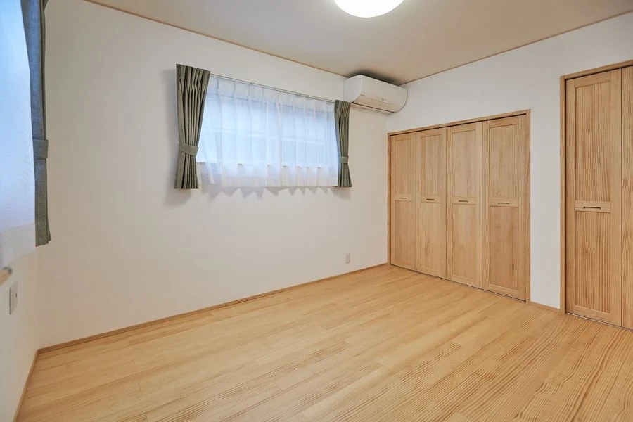
こちらは、２階の主寝室。
家中すべての部屋が「自然素材」の快適空間。質の良い深い睡眠がとれる環境です。
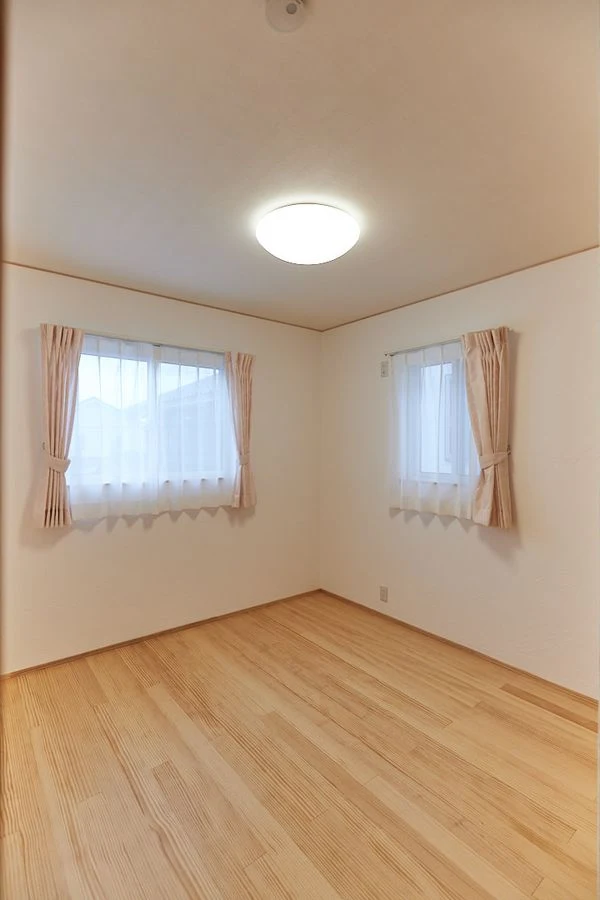
子ども部屋その１。
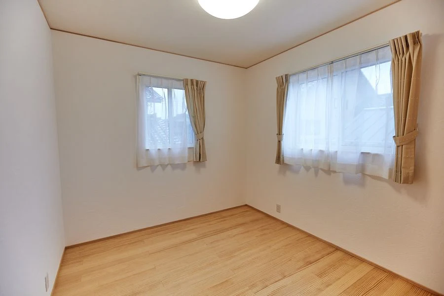
子ども部屋その２。
それぞれの部屋は、２方向の窓から光を採りこんで自然光だけでも明るい部屋になります。
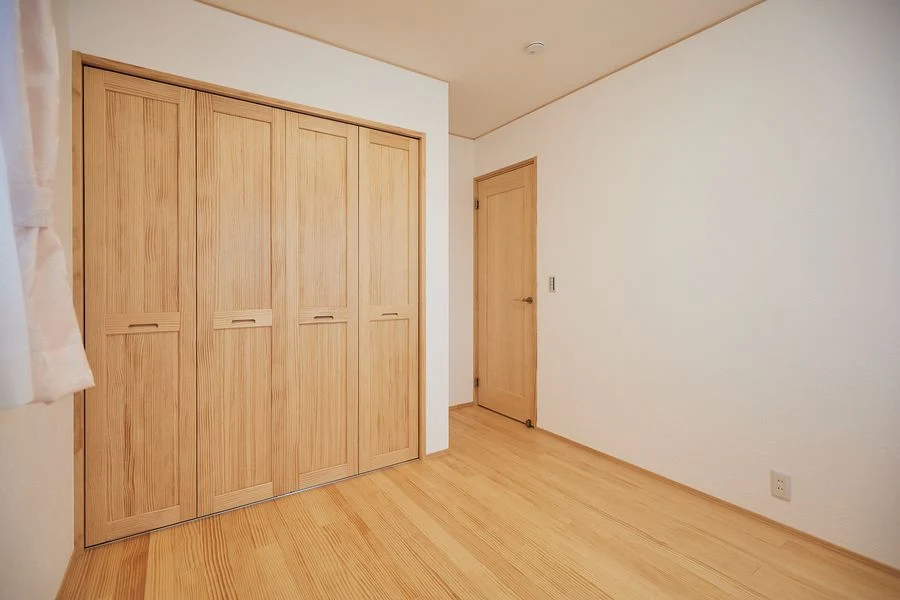
各部屋の収納スペースも十分です。
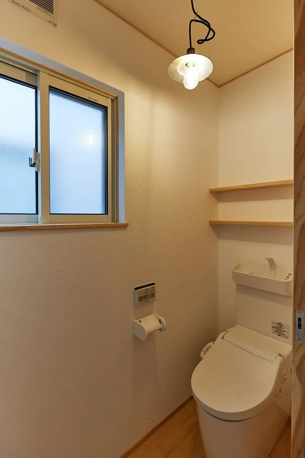
２階トイレには「飾り棚」と、こちらも「アンティーク調ペンダントライト」を取り付けて、
かわいさを自由にアレンジできる空間になっています。
開催概要
- 開催日時
- 2022年4月23日(土)・24日(日)
AM10:00～PM5:00
- 開催場所
- 富山県高岡市京田
※詳細はご予約の方にお伝えします。

新型コロナウイルス感染症
拡大防止の対応について
フジ創アイノスでは、モデルハウス、イベント会場において、お客様に安心してご来場いただくために、マスクの着用・手洗い・アルコール消毒・高頻度接触部位の消毒・換気等の徹底を行い、可能な限りの対策を心掛けております。
また、ご来場に関しましては、不特定多数の方で混み合う状況を避けるため、見学会・相談会・セミナー等の開催イベントにつきましては、事前予約をおすすめします。ご来場を希望される方は、WEB予約、お電話でのご予約をお願い致します。